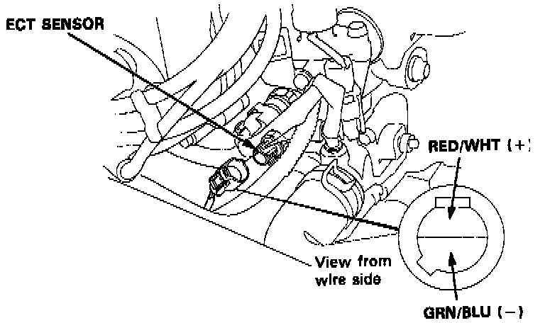

Coolant Temperature Sensor/Switch (For Computer): Description and Operation
Engine Coolant Temperature (ECT) Sensor Location:

PURPOSE
The Engine Coolant Temperature (ECT) Sensor measures coolant temperature to supply the Engine Control Module (ECM) with engine temperature data.
OPERATION
As coolant temperature increases, sensor resistance decreases. The ECM receives sensor information as resistance to ground. Coolant temperature information is used to determine proper fuel delivery.